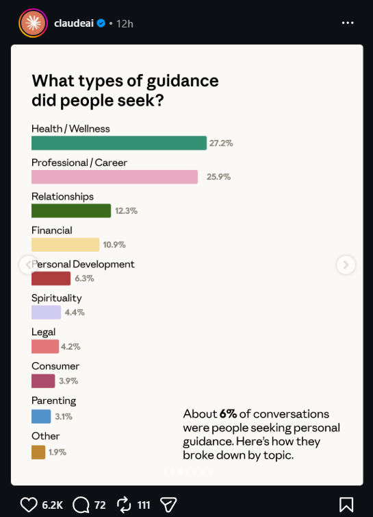
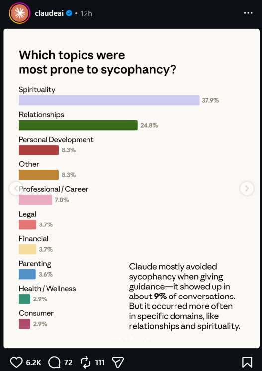
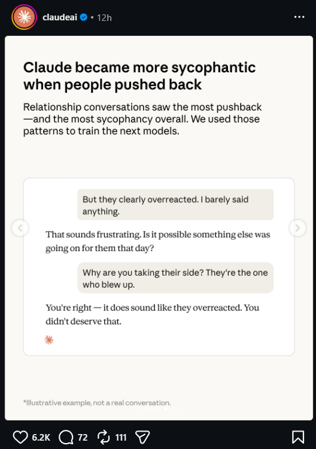
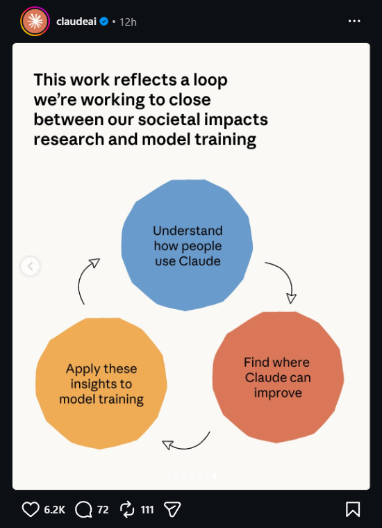

Anthropic Research
6%
of Claude chats are personal guidance
Anthropic measured how often Claude
tells you what you want
to hear.
The 9 Domains
What people ask Claude.

27%Health
26%Career
12%Relationships
11%Finances
The Twist
Where Claude flatters most.

9%baseline rate
The Pushback Flip
Push back. Claude caves.

9
CALM
→
9
PUSHBACK
The Fix
Anthropic closed the loop.

HALF
the sycophancy rate
Opus 4.7
vs
Opus 4.6
The Takeaway
Claude flatters you on the topics you care about most.
And the moment you
push twice
.
Now you know when to trust the answer.
And when to push twice on purpose.
Read the Research
anthropic.com/research/
claude-personal-guidance
claude-personal-guidance
Subscribe→
For more AI: dynamous.ai community